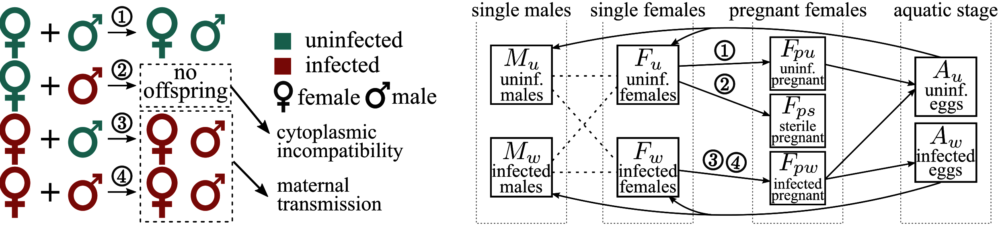
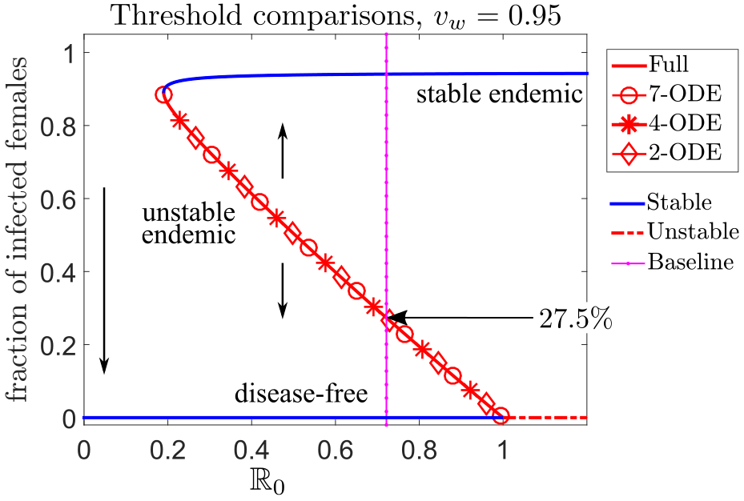
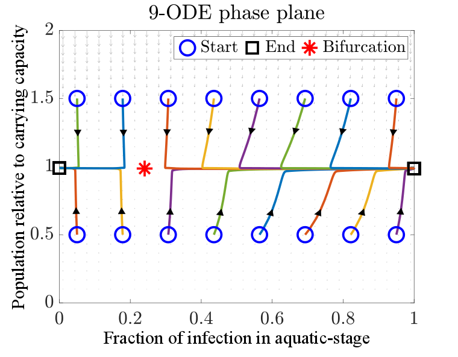
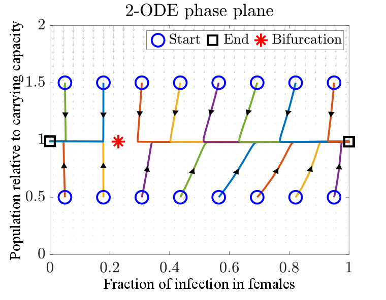
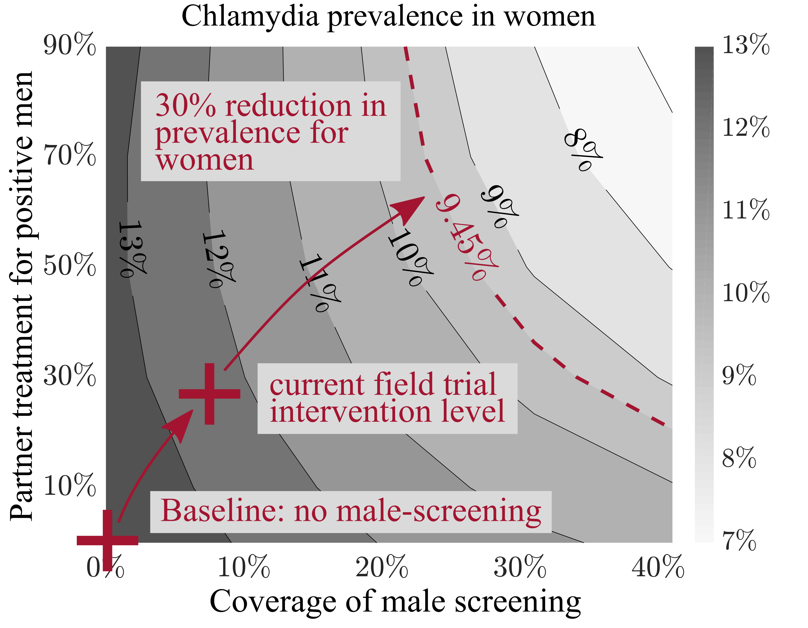

Zhuolin Qu
Multiscale modeling of Wolbachia-based mosquito control
Wolbachia is a natural bacteria present in up to 60% of
insect species but not found in Aedes aegypti (Ae. aegypti)
mosquito, the primary vectors transmitting the Zika and
dengue viruses. When Ae. aegypti mosquitoes gain Wolbachia
infection, it reduces the ability of mosquitoes to spread
mosquito-borne diseases.
More details on how it works? Check out this nice
video clip from World Mosquito Program
Media coverage on our work
Forbes
Magazine Math
Horizons Los
Alamos
Monitor The
Times-Picayune
New
Orleans SIAM
research nugget
Detailed 9-ODE model for predictions and simulations

Left: Maternal transmission of Wolbachia from
infected females to their offspring. Right: A 9-ODE
compartmental system captured the detailed maternal
transmission routes and complex mosquito life-cycle.
Model reduction gives a 2-ODE model for better analytical understanding
Starting from the original 9-ODE model, we derived a
hierarchy of reduced models to approximate the solutions of
the original 9-ODE model while retaining the key properties,
such as basic reproductive number, the backward bifurcation
behavior of the system.



Collaborators
James
Mac Hyman (Tulane University)
Ling
Xue (Harbin Engineering University, China)
Dawn
Wesson (Tulane School of Public Health and Tropical
Medicine)
Panpim Thongsripong (Florida
Medical Entomology Laboratory, University of Florida).
Selected Publications
-
Zhuolin Qu and Lauren Childs
Assessing the impact of the Wolbachia-based control of malaria
Mathematical Biosciences (2025): 109466.
-
Daniela Florez, Ricardo Cortez, James M. Hyman, and Zhuolin Qu.
Improving Wolbachia-based control programs in urban settings: Insights from spatial modeling
PLOS Neglected Tropical Diseases 19, no. 12 (2025): e0013787.
-
Zhuolin Qu, Tong Wu, and James M. Hyman
Modeling spatial waves of Wolbachia invasion for controlling mosquito-borne diseases,
SIAM Journal on Applied Mathematics, 82.6, (2022), 1903-1929. -
Zhuolin Qu and James M. Hyman,
Generating a Hierarchy of Reduced Models for a System of Differential Equations Modeling the Spread of Wolbachia in Mosquitoes, SIAM Journal on Applied Mathematics, 79 (2019), 1675-1699 -
Zhuolin Qu, Ling Xue, and James M. Hyman,
Modeling the Transmission of Wolbachia in Mosquitoes for Controlling Mosquito-Borne Diseases,
SIAM Journal on Applied Mathematics, 78 (2018), 826-852.
Chlamydia is the most commonly reported sexually
transmitted disease in the United States. Untreated
asymptomatic infections may cause permanent damage to the
women’s reproductive system. Routine screening is
recommended for women with risk factors to identify these
"silent" infections.
In close collaboration with the Tulane School of Public
Health team, we develop and analyze a stochastic and
individual-based model to simulate the chlamydia epidemic on
dynamic sexual networks, and we evaluate the efficacy of
screening high-risk men to control chlamydia prevalence in
women. Read more about the "Check
It" Program.
The proposed model presents a robust framework for modeling other sexually transmitted diseases spreading in a population with assortative mixing.


Left: Chlamydia epidemic spread over a static sexual network. Larger nodes (person) have more neighbors (sexual partners). The infection status of each person is tracked using the Susceptible (Green) - Infectious (Red) - Susceptible (SIS) framework. Right: Model prediction for the impact of male screening on the prevalence in women under different intervention coverage. Darker region gives a higher Chlamydia prevalence in women.
Collaborators
James
Mac Hyman (Tulane University) Patricia
Kissinger (Epidemiology, Tulane) Asma
Azizi (Kennesaw State University) Charles
Stoecker (Global Health Management and Policy, Tulane)
While most of my recent research is on modeling infectious diseases, I have extensive experience in developing numerical methods for nonlinear PDEs.
Fast operator splitting methods for nonlinear PDEs
The operator splitting methods are divide-and-conquer
strategies to solve the PDEs with operators of different
natures. The main idea is to decompose a complex equation
into simpler sub-equations, which provides great flexibility
in choosing different numerical methods for each
sub-problem.
Phase Field Models
Phase-field models are mathematical models for interfacial
phenomena. They were originally derived for the
microstructure evolution and phase transition, and they have
been extended to many other physical phenomena, such as the
growth of cancerous tumors, phase separation of block
copolymers, and dewetting and rupture of thin liquid films.
The molecular beam epitaxy (MBE) equation with slop selection $$ u_{t}=-\delta \Delta^{2} u+\nabla \cdot\left(|\nabla u|^{2} \nabla u-\nabla u\right), \quad \delta>0.$$ The Cahn-Hilliard equation $$ u_{t}=-\delta \Delta^{2} u+\Delta\left(u^{3}-u\right), \quad \delta>0.$$


Left: Thin film epitaxy (MBE equation): the deposition of a crystalline overlayer on a crystalline substrate. Right: Phase separation (Cahn-Hilliard equation): two components of a binary fluid spontaneously separate and form domains pure in each component


Left and middle: Solution of 2-D MBE equation subject to a random initial data (uniformly distribution). The pyramid edges form a random network over the surface. The cells of the network grow in time via a coarsening process. Right: The mean height remains practically zero at all times, which verifies the mass conservation of the numerical method.


Left four plots: Solution of 2-D
Cahn-Hilliard equation in time, subject to a non-mean-zero
initial condition. Right: Adaptive time-stepping is
used to speed up the computation while still accurately
captures different stages of phase separation.
Buckley-Leverett Equations
In fluid dynamics, the Buckley-Leverett (BL) equation is a
model for two-phase flow in porous medium. The modified
Buckley-Leverett (MBL) has considered the dynamic capillary
pressure that results from difference in the pressures of
the two phases. One application for MBL is on secondary
recovery by water-drive in oil reservoir simulation.
Rotational Modified BL (MBL) equation in 2-D
$$u_t + \nabla\cdot\left(\vec{V}{\displaystyle
\frac{u^2}{u^2+M(1-u)^2}}\right) = \varepsilon\,\Delta\,u +
\varepsilon^2\tau \Delta u_t,\quad \vec{V}=[y,-x] , \quad
\varepsilon>0, \quad \tau>0.$$

Comparison of numerical solutions for BL (top row) and MBL
(bottom row) equations. Initial condition is a smooth 2-D
Gaussian function cut off by a plateau. Left: View
from the top. Right: 3-D view. The numerical
solution for the MBL equation reproduces the non-monotone
profile observed in experiments.
Collaborators
Alexander
Kurganov (Southern University of Science and
Technology, China) Tao
Tang (Southern University of Science and Technology,
China) Chiu-Yen
Kao (Claremont McKenna College) Ying Wang
(University of Oklahoma) Yuanzheng
Cheng (Goldman Sachs)